Normandy - Chris & Tim
Travel (last checked 19th July)
Eurostar
London Paris & Paris London ~ £119 (cheaper to leave and return on the Saturdays)

SNCF
Paris Caen & Caen Paris ~ £40.97

Car Rental
Car Rental - via Travelsupermarket. Starting at £172.35

via Skyscanner. Starting at £249

Properties
All properties are for 7 nights - from Sun 23rd to Sun 30th August
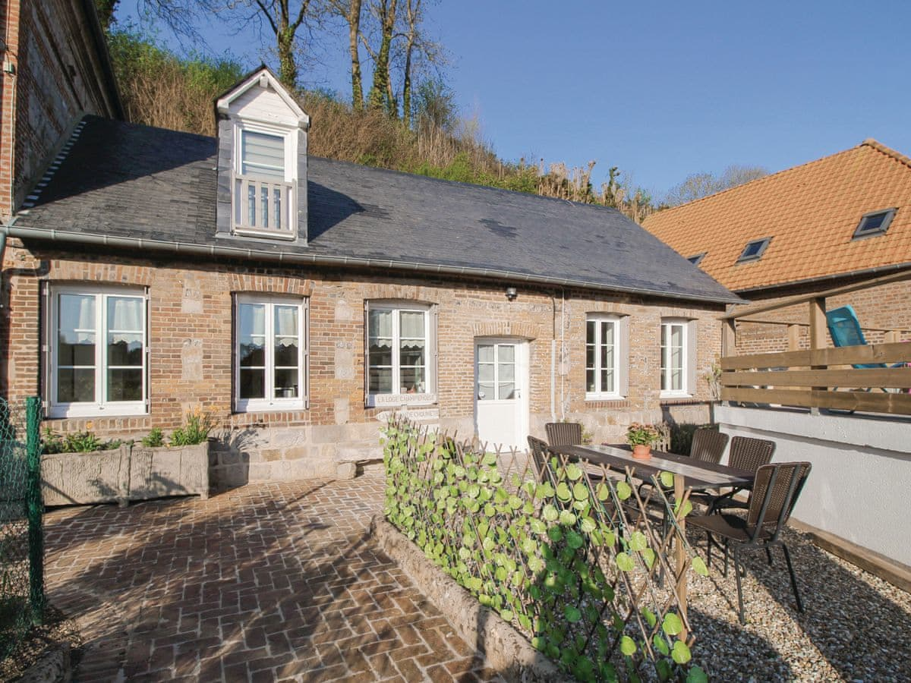
Cheap, outdoor BBQ, 2 showers. Near castles, coast, historical sites plus Frances oldest oak tree.
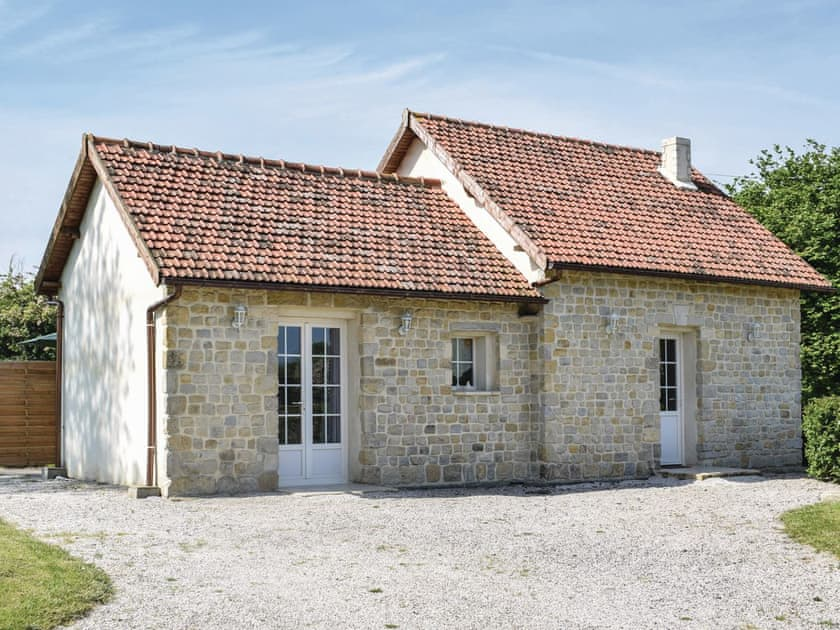
La Cambe (ref FNC017) in La Cambe, Normandy | cottages.com - £560
Also Cheap, Near the courseulles-sur-mer beach, D-Day landings & Bayeux. On edge of national park. 2 bedrooms - 1 divided by a curtain.
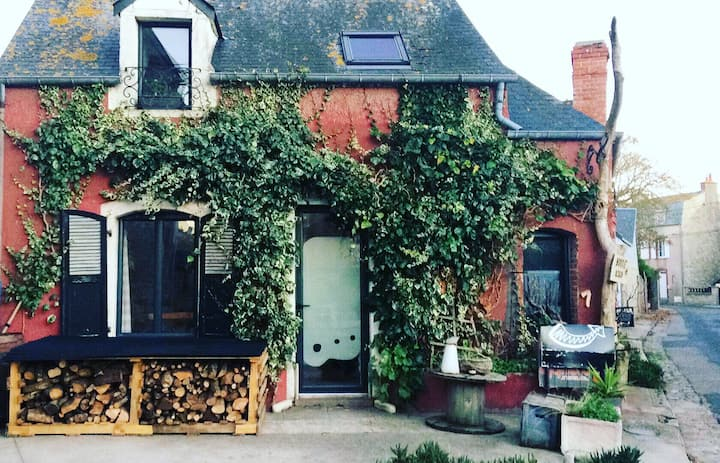
La maison rouge - Houses for Rent in Saint-Vaast-la-Hougue, Normandie, France - £699
20m from the sea, French port village, roof terrace with sea view, very nice inside and out. Near national park + 2km from beautiful Jonville beach.
Rustic cottage on organic farm, located between the landing beaches (15 minutes from Ste Mère Eglise) and Mont Saint Michel. In National Park.
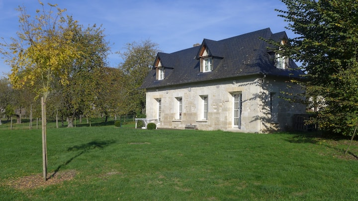L’étable - Houses for Rent in Jumièges, Normandie, France - £597
Located in Seine valley, in a national park. Country house, fruit trees and large green space.
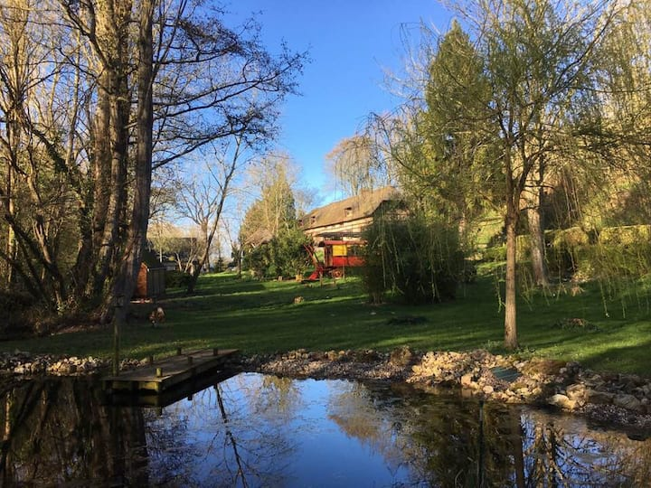
La Normande de Grestain - Cottages for Rent in Fatouville-Grestain, Normandie, France - £735
Close to coast and river estuary, a property with 9 hectare park, very tree-lined in lush greenery, view on a small pond, very calm
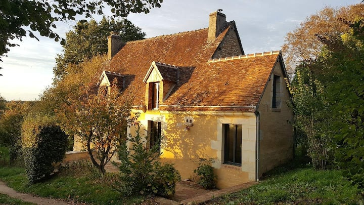
Located in the heart of the Perche regional natural park, in a typical hamlet. Inland but very nice area.
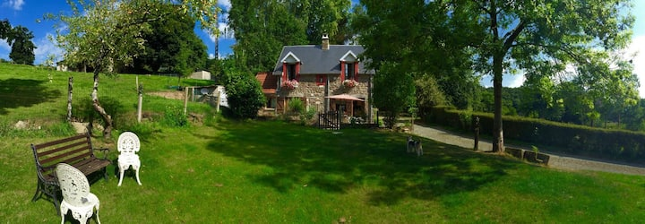Gite le Hamel au Maigre - Cottages for Rent in Sourdeval-les-Bois, Normandie, France - £745
Attractive rural cottage set in a picturesque area of Normandy in the Val de Sienne opposite the 12c. Abbaye de Hambye. Central point between Mont Saint Michel and the Normandy beaches.
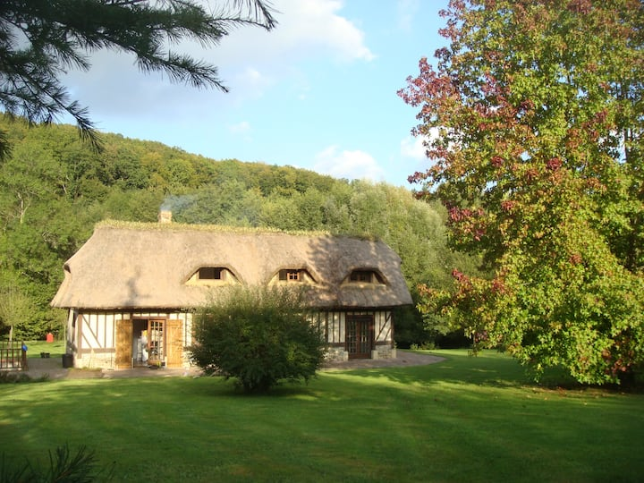Charmante chaumière près d’Honfleur - Houses for Rent in Triqueville, 27500, France - £881
Thatched cottage with a beautiful garden plus 2 hectare wooded park, with access to pond (+ use of small boat) and river. Long walks on hiking trails directly accessible from the property. Nearish coast and Seine river estuary - on edge of national park
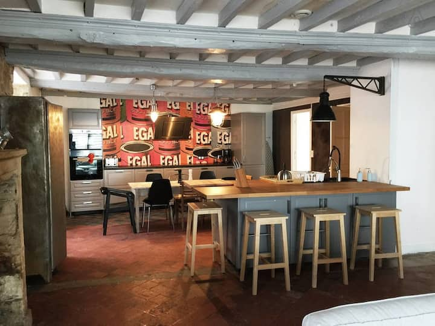
Former restaurant, cafe and art gallery, this large house just outside Bayeux, is perfectly located for visiting this historic region and especially the D-day beaches. Cafe like rear area with tables and umbrella and BBQ. (And waiter) ; P)
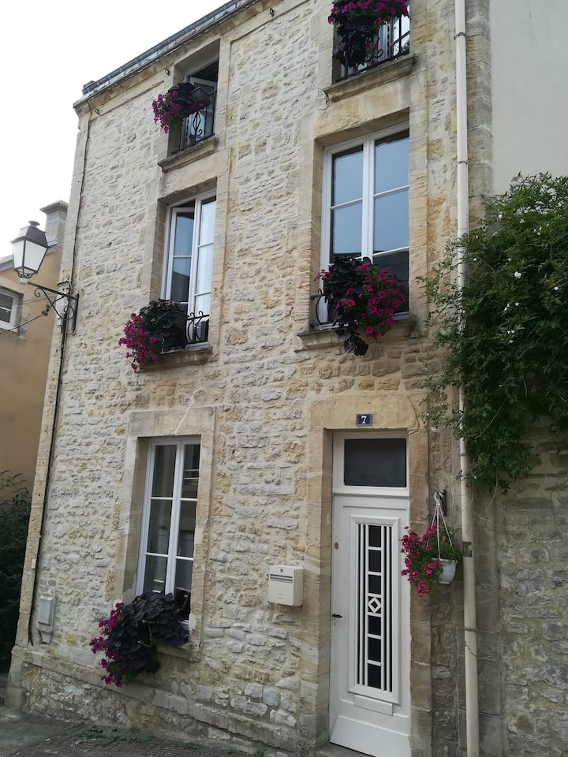
le 7 “rue du Phare” - Townhouses for Rent in Port-en-Bessin-Huppain, Normandie, France - £564
Town house directly on the artisanal fishing Port en Bessin. Sunday market and close to D-day beaches, Bayeux tapestry.
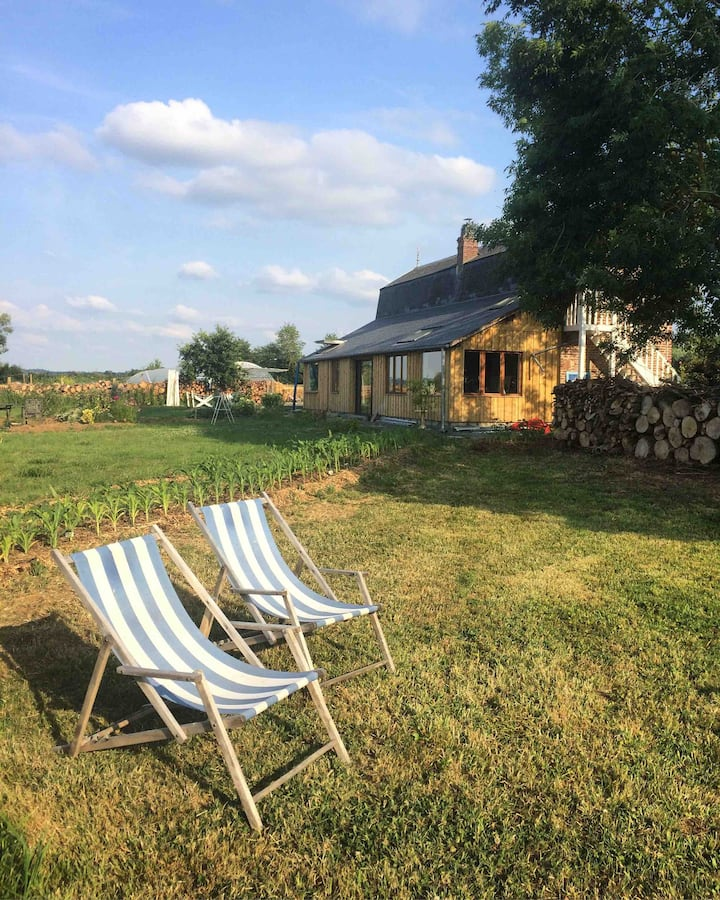
Beautiful permaculture farm between coastal Honfleur in the east and Caen. Explore fields, wooded countryside and ze amazing views on the Touques valley.